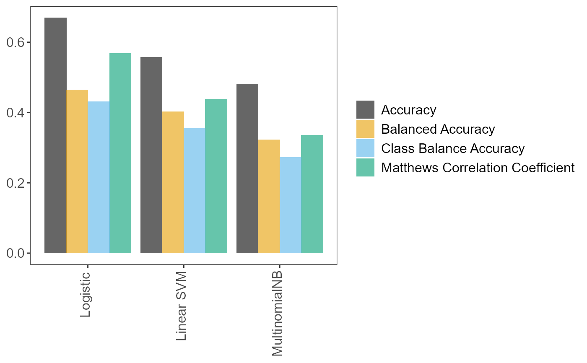

text_classification_pipeline_r.RdSplit the data, build and fit the pipeline, produce performance metrics.
text_classification_pipeline_r( filename, target, predictor, test_size = 0.33, ordinal = FALSE, tknz = "spacy", metric = "class_balance_accuracy_score", cv = 2, n_iter = 10, n_jobs = 1, verbose = 3, learners = c("SGDClassifier"), reduce_criticality = FALSE, theme = NULL )
| filename | A data frame with the data (class and text columns), otherwise the dataset name (CSV), including full path to the data folder (if not in the project's working directory), and the data type suffix (".csv"). |
|---|---|
| target | String. The name of the response variable. |
| predictor | String. The name of the predictor variable. |
| test_size | Numeric. Proportion of data that will form the test dataset. |
| ordinal | Whether to fit an ordinal classification model. The ordinal model is the implementation of Frank and Hall (2001) that can use any standard classification model that calculates probabilities. |
| tknz | Tokenizer to use ("spacy" or "wordnet"). |
| metric | String. Scorer to use during pipeline tuning ("accuracy_score", "balanced_accuracy_score", "matthews_corrcoef", "class_balance_accuracy_score"). |
| cv | Number of cross-validation folds. |
| n_iter | Number of parameter settings that are sampled (see
|
| n_jobs | Number of jobs to run in parallel (see |
| verbose | Controls the verbosity (see |
| learners | Vector. |
| reduce_criticality | Logical. For internal use by Nottinghamshire
Healthcare NHS Foundation Trust or other trusts that hold data on
criticality. If |
| theme | String. For internal use by Nottinghamshire Healthcare NHS
Foundation Trust or other trusts that use theme labels ("Access",
"Environment/ facilities" etc.). The column name of the theme variable.
Defaults to |
A list of length 7:
A fitted Scikit-learn pipeline containing a number of objects
that can be accessed with the $ sign (see examples). For a
partial list see "Atributes" in
sklearn.model_selection.RandomizedSearchCV.
Do not be surprised if more objects are in the pipeline than
those in the aforementioned "Attributes" list. Python objects can
contain several objects, from numeric results (e.g. the
pipeline's accuracy), to methods (i.e. functions in the R
lingo) and classes. In Python, these are normally accessed with
object.<whatever>, but in R the command is object$<whatever>.
For instance, one can access method predict() to make to make
predictions on unseen data. See Examples.
tuning_results Data frame. All (hyper)parameter values
and models tried during fitting.
pred Vector. The predictions on the test set.
accuracy_per_class Data frame. Accuracies per class.
p_compare_models_bar A bar plot comparing the mean scores (of
the user-supplied metric parameter) from the cross-validation
on the training set, for the best (hyper)parameter values for
each learner.
index_training_data The row names/indices of the training
data. Note that, in Python, indices start from 0 and go up to
number_of_records - 1. See Examples.
index_test_data The row names/indices of the test data. Note
that, in Python, indices start from 0 and go up to
number_of_records - 1. See Examples.
This function brings together the three functions that run chunks of
the process independently, namely splitting data into training and test
sets (factory_data_load_and_split_r), building and fitting
the pipeline (factory_pipeline_r) on the whole dataset
(train and test), and assessing pipeline performance
(factory_model_performance_r).
For details on what the pipeline does/how it works, see
factory_pipeline_r's
Details
section.
Frank E. & Hall M. (2001). A Simple Approach to Ordinal Classification. Machine Learning: ECML 2001 145--156.
Pedregosa F., Varoquaux G., Gramfort A., Michel V., Thirion B., Grisel O., Blondel M., Prettenhofer P., Weiss R., Dubourg V., Vanderplas J., Passos A., Cournapeau D., Brucher M., Perrot M. & Duchesnay E. (2011), Scikit-learn: Machine Learning in Python. Journal of Machine Learning Research 12:2825–-2830.
# We can prepare the data, build and fit the pipeline, and get performance # metrics, in two ways. One way is to run the factory_* functions independently # The commented out script right below would do exactly that. # Prepare training and test sets # data_splits <- pxtextmineR::factory_data_load_and_split_r( # filename = pxtextmineR::text_data, # target = "label", # predictor = "feedback", # test_size = 0.90) # Make a small training set for a faster run in this example # # # Fit the pipeline # pipe <- pxtextmineR::factory_pipeline_r( # x = data_splits$x_train, # y = data_splits$y_train, # tknz = "spacy", # ordinal = FALSE, # metric = "class_balance_accuracy_score", # cv = 2, n_iter = 10, n_jobs = 1, verbose = 3, # learners = c("SGDClassifier", "MultinomialNB") # ) # (SGDClassifier represents both logistic regression and linear SVM. This # depends on the value of the "loss" hyperparameter, which can be "log" or # "hinge". This is set internally in factory_pipeline_r). # # # Assess model performance # pipe_performance <- pxtextmineR::factory_model_performance_r( # pipe = pipe, # x_train = data_splits$x_train, # y_train = data_splits$y_train, # x_test = data_splits$x_test, # y_test = data_splits$y_test, # metric = "accuracy_score") # Alternatively, we can use text_classification_pipeline_r() to do everything in # one go. text_pipe <- pxtextmineR::text_classification_pipeline_r( filename = pxtextmineR::text_data, target = 'label', predictor = 'feedback', test_size = 0.33, ordinal = FALSE, tknz = "spacy", metric = "class_balance_accuracy_score", cv = 2, n_iter = 10, n_jobs = 1, verbose = 3, learners = c("SGDClassifier", "MultinomialNB"), reduce_criticality = FALSE, theme = NULL ) names(text_pipe)#> [1] "pipe" "tuning_results" "pred" #> [4] "accuracy_per_class" "p_compare_models_bar" "index_training_data" #> [7] "index_test_data"# Let's compare pipeline performance for different tunings with a range of # metrics averaging the cross-validation metrics for each fold. text_pipe$ tuning_results %>% dplyr::select(learner, dplyr::contains("mean_test"))#> learner mean_test_Accuracy mean_test_Balanced Accuracy #> 2 Logistic 0.6692195 0.4642124 #> 0 Linear SVM 0.5575606 0.4020137 #> 6 Logistic 0.5090311 0.3634837 #> 5 Linear SVM 0.5855842 0.3474347 #> 8 MultinomialNB 0.4810045 0.3219231 #> 9 Linear SVM 0.4170098 0.3080414 #> 1 MultinomialNB 0.4805708 0.2927007 #> 4 MultinomialNB 0.5646388 0.2881532 #> 7 Logistic 0.4552871 0.2632449 #> 3 Logistic 0.4135429 0.2520484 #> mean_test_Matthews Correlation Coefficient mean_test_Class Balance Accuracy #> 2 0.5679886 0.4312644 #> 0 0.4386832 0.3549740 #> 6 0.3785785 0.3066306 #> 5 0.4573056 0.3014037 #> 8 0.3360435 0.2718537 #> 9 0.2858717 0.2535001 #> 1 0.3198254 0.2445776 #> 4 0.4183560 0.2346988 #> 7 0.2877204 0.2207833 #> 3 0.2491383 0.1815914# A glance at the (hyper)parameters and their tuned values text_pipe$ tuning_results %>% dplyr::select(learner, dplyr::contains("param_")) %>% str()#> 'data.frame': 10 obs. of 22 variables: #> $ learner : chr "Logistic" "Linear SVM" "Logistic" "Linear SVM" ... #> $ param_sampling__kw_args : chr "{'up_balancing_counts': 800}" "{'up_balancing_counts': 300}" "{'up_balancing_counts': 800}" "{'up_balancing_counts': 800}" ... #> $ param_preprocessor__texttr__text__transformer__use_idf :List of 10 #> ..$ : logi FALSE #> ..$ : logi FALSE #> ..$ : logi FALSE #> ..$ : logi FALSE #> ..$ : logi TRUE #> ..$ : logi TRUE #> ..$ : logi TRUE #> ..$ : logi FALSE #> ..$ : logi FALSE #> ..$ : logi TRUE #> $ param_preprocessor__texttr__text__transformer__tokenizer : chr "<pxtextmining.helpers.tokenization.LemmaTokenizer object at 0x0000000016D661C0>" "<pxtextmining.helpers.tokenization.LemmaTokenizer object at 0x0000000016D661C0>" "<pxtextmining.helpers.tokenization.LemmaTokenizer object at 0x0000000016D661C0>" "<pxtextmining.helpers.tokenization.LemmaTokenizer object at 0x0000000016D661C0>" ... #> $ param_preprocessor__texttr__text__transformer__preprocessor: chr "<function text_preprocessor at 0x00000000665D93A0>" "<function text_preprocessor at 0x00000000665D93A0>" "<function text_preprocessor at 0x00000000665D93A0>" "<function text_preprocessor at 0x00000000665D93A0>" ... #> $ param_preprocessor__texttr__text__transformer__norm :List of 10 #> ..$ : NULL #> ..$ : chr "l2" #> ..$ : chr "l2" #> ..$ : NULL #> ..$ : chr "l2" #> ..$ : chr "l2" #> ..$ : chr "l2" #> ..$ : NULL #> ..$ : NULL #> ..$ : chr "l2" #> $ param_preprocessor__texttr__text__transformer__ngram_range : chr "(1, 3)" "(2, 3)" "(2, 3)" "(2, 3)" ... #> $ param_preprocessor__texttr__text__transformer__min_df :List of 10 #> ..$ : int 1 #> ..$ : int 3 #> ..$ : int 1 #> ..$ : int 1 #> ..$ : int 3 #> ..$ : int 3 #> ..$ : int 3 #> ..$ : int 3 #> ..$ : int 3 #> ..$ : int 3 #> $ param_preprocessor__texttr__text__transformer__max_df :List of 10 #> ..$ : num 0.95 #> ..$ : num 0.7 #> ..$ : num 0.95 #> ..$ : num 0.95 #> ..$ : num 0.95 #> ..$ : num 0.7 #> ..$ : num 0.7 #> ..$ : num 0.7 #> ..$ : num 0.7 #> ..$ : num 0.7 #> $ param_preprocessor__texttr__text__transformer : chr "TfidfVectorizer(max_df=0.95, ngram_range=(1, 3), norm=None,\n preprocessor=<function text_prepro"| __truncated__ "TfidfVectorizer(max_df=0.95, ngram_range=(1, 3), norm=None,\n preprocessor=<function text_prepro"| __truncated__ "TfidfVectorizer(max_df=0.95, ngram_range=(1, 3), norm=None,\n preprocessor=<function text_prepro"| __truncated__ "TfidfVectorizer(max_df=0.95, ngram_range=(1, 3), norm=None,\n preprocessor=<function text_prepro"| __truncated__ ... #> $ param_preprocessor__sentimenttr__scaler__scaler__n_bins :List of 10 #> ..$ : int 4 #> ..$ : int 4 #> ..$ : int 4 #> ..$ : int 4 #> ..$ : int 8 #> ..$ : int 8 #> ..$ : int 4 #> ..$ : int 4 #> ..$ : int 8 #> ..$ : int 4 #> $ param_preprocessor__sentimenttr__scaler__scaler : chr "KBinsDiscretizer(n_bins=4, strategy='kmeans')" "KBinsDiscretizer(n_bins=4, strategy='kmeans')" "KBinsDiscretizer(n_bins=4, strategy='kmeans')" "KBinsDiscretizer(n_bins=4, strategy='kmeans')" ... #> $ param_preprocessor__lengthtr__scaler__scaler : chr "KBinsDiscretizer(n_bins=3, strategy='kmeans')" "KBinsDiscretizer(n_bins=3, strategy='kmeans')" "KBinsDiscretizer(n_bins=3, strategy='kmeans')" "KBinsDiscretizer(n_bins=3, strategy='kmeans')" ... #> $ param_featsel__selector__score_func : chr "<function chi2 at 0x00000000665C14C0>" "<function chi2 at 0x00000000665C14C0>" "<function chi2 at 0x00000000665C14C0>" "<function chi2 at 0x00000000665C14C0>" ... #> $ param_featsel__selector__percentile :List of 10 #> ..$ : int 70 #> ..$ : int 70 #> ..$ : int 85 #> ..$ : int 70 #> ..$ : int 85 #> ..$ : int 85 #> ..$ : int 100 #> ..$ : int 100 #> ..$ : int 85 #> ..$ : int 85 #> $ param_featsel__selector : chr "SelectPercentile(percentile=70,\n score_func=<function chi2 at 0x00000000665C14C0>)" "SelectPercentile(percentile=70,\n score_func=<function chi2 at 0x00000000665C14C0>)" "SelectPercentile(percentile=70,\n score_func=<function chi2 at 0x00000000665C14C0>)" "SelectPercentile(percentile=70,\n score_func=<function chi2 at 0x00000000665C14C0>)" ... #> $ param_clf__estimator__penalty :List of 10 #> ..$ : chr "elasticnet" #> ..$ : chr "l2" #> ..$ : chr "elasticnet" #> ..$ : chr "l2" #> ..$ : num NaN #> ..$ : chr "elasticnet" #> ..$ : num NaN #> ..$ : num NaN #> ..$ : chr "elasticnet" #> ..$ : chr "l2" #> $ param_clf__estimator__max_iter :List of 10 #> ..$ : int 10000 #> ..$ : int 10000 #> ..$ : int 10000 #> ..$ : int 10000 #> ..$ : num NaN #> ..$ : int 10000 #> ..$ : num NaN #> ..$ : num NaN #> ..$ : int 10000 #> ..$ : int 10000 #> $ param_clf__estimator__loss :List of 10 #> ..$ : chr "log" #> ..$ : chr "hinge" #> ..$ : chr "log" #> ..$ : chr "hinge" #> ..$ : num NaN #> ..$ : chr "hinge" #> ..$ : num NaN #> ..$ : num NaN #> ..$ : chr "log" #> ..$ : chr "log" #> $ param_clf__estimator__class_weight :List of 10 #> ..$ : chr "balanced" #> ..$ : chr "balanced" #> ..$ : chr "balanced" #> ..$ : chr "balanced" #> ..$ : num NaN #> ..$ : chr "balanced" #> ..$ : num NaN #> ..$ : num NaN #> ..$ : NULL #> ..$ : NULL #> $ param_clf__estimator : chr "SGDClassifier(class_weight='balanced', loss='log', max_iter=10000,\n penalty='elasticnet')" "SGDClassifier(class_weight='balanced', loss='log', max_iter=10000,\n penalty='elasticnet')" "SGDClassifier(class_weight='balanced', loss='log', max_iter=10000,\n penalty='elasticnet')" "SGDClassifier(class_weight='balanced', loss='log', max_iter=10000,\n penalty='elasticnet')" ... #> $ param_clf__estimator__alpha :List of 10 #> ..$ : num NaN #> ..$ : num NaN #> ..$ : num NaN #> ..$ : num NaN #> ..$ : num 0.1 #> ..$ : num NaN #> ..$ : num 0.5 #> ..$ : int 1 #> ..$ : num NaN #> ..$ : num NaN #> - attr(*, "pandas.index")=Int64Index([2, 0, 6, 5, 8, 9, 1, 4, 7, 3], dtype='int64')# Learner performance barplot text_pipe$p_compare_models_bar#> [1] "Care received" "Care received" "Couldn't be improved" #> [4] "Staff" "Care received" "Staff"# We can also get the row indices of the train and test data. Note that, in # Python, indices start from 0. For example, the row indices of a data frame # with 5 rows would be 0, 1, 2, 3 & 4. head(sort(text_pipe$index_training_data))#> [1] 0 1 2 3 4 5#> [1] 7 11 12 19 23 26# Let's subset the original data set text_dataset <- pxtextmineR::text_data rownames(text_dataset) <- 0:(nrow(text_dataset) - 1) data_train <- text_dataset[text_pipe$index_training_data, ] data_test <- text_dataset[text_pipe$index_test_data, ] str(data_train)#> 'data.frame': 6922 obs. of 3 variables: #> $ label : chr "Staff" "Care received" "Communication" "Couldn't be improved" ... #> $ criticality: chr "1" "0" "0" "3" ... #> $ feedback : chr "It’s because that doctors, nurses help me" "What was very good was the fact the Physiotherapist called to see my mother when she was in the area just to se"| __truncated__ "XXXX was a good listener." "Nothing" ...#> 'data.frame': 3411 obs. of 3 variables: #> $ label : chr "Communication" "Care received" "Couldn't be improved" "Staff" ... #> $ criticality: chr "0" "0" "3" "0" ... #> $ feedback : chr "Patient, listened carefully and very helpful advice. Positive advice and exercises to do.\n" "I found the service very beneficial." "No, I was very with it all." "I find the staff welcoming and caring, making me feel more comfortable in discussing things." ...